Data Section
Open connection and query data
Vytics Desktop allows you to query all connections in SQL language. To query data from a connection, follow steps below.
-
Double left click to open a connection. If a connection is a text file, this will also query the data from the connection. 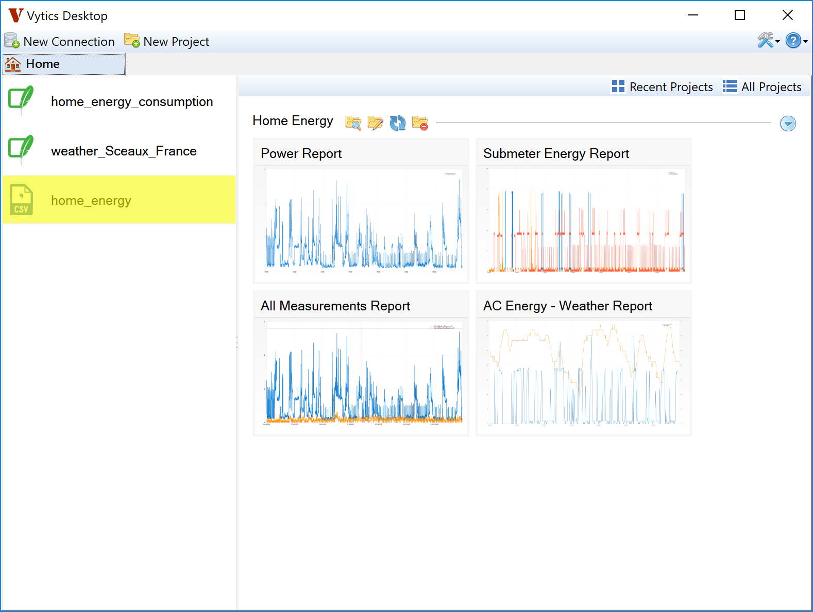
-
The default query and queried data will be shown. 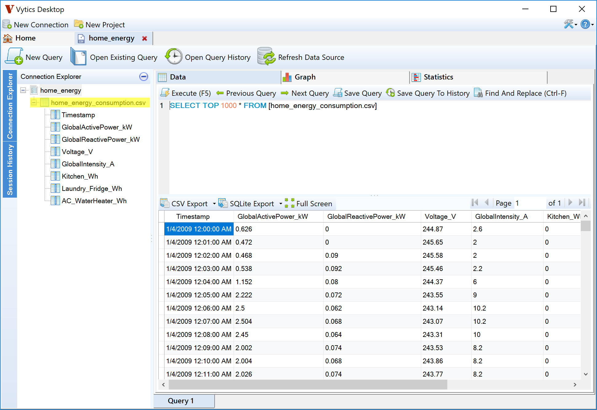
-
You can modify the SQL query to fit your needs. Vytics offers auto-complete feature and context sensitive editor. 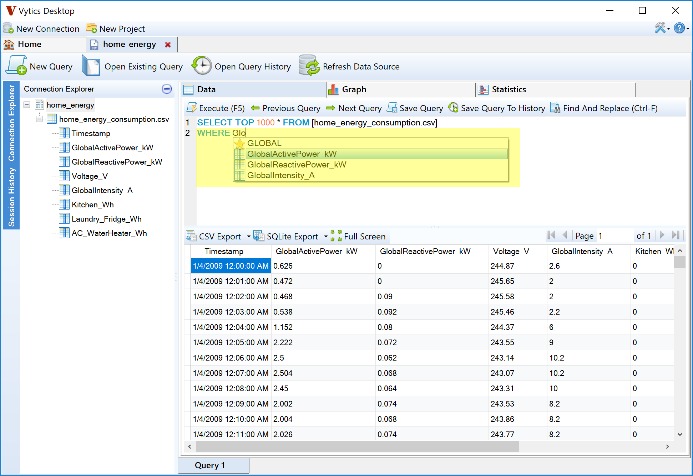
-
After editting the SQL query, click Execute or press F5 to run the query. The result will be updated in the data grid at the bottom. 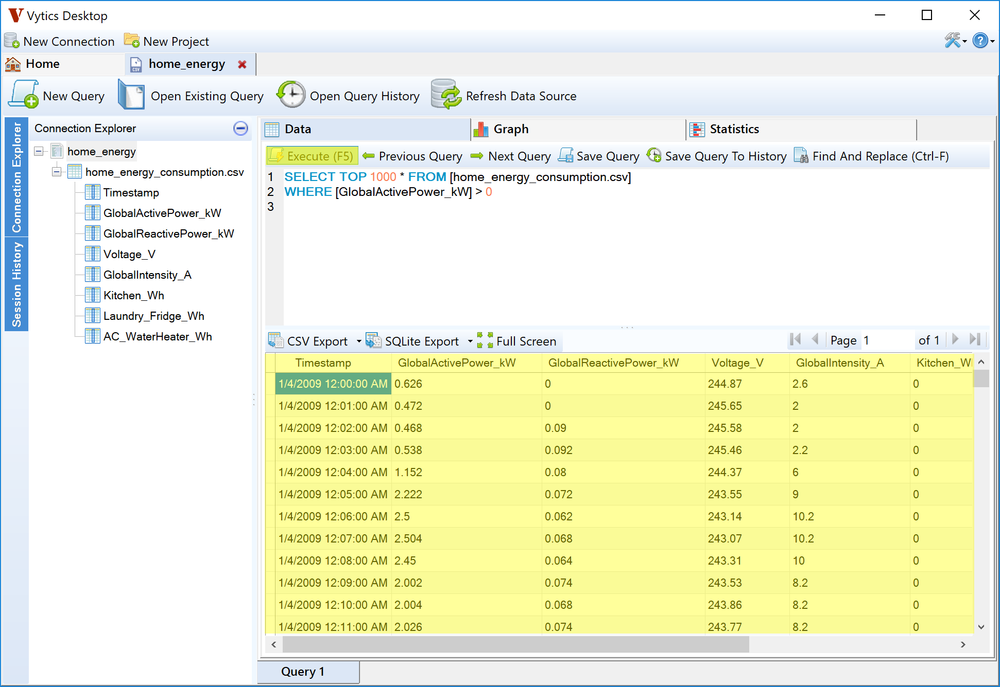
Add custom column
Before plotting any dataset, you should check for data types to prevent unexpected result. To add a custom column, follow steps below.
-
Open and query home_energy connection (file home_energy_consumption.csv). Click Columns Info to see columns information. 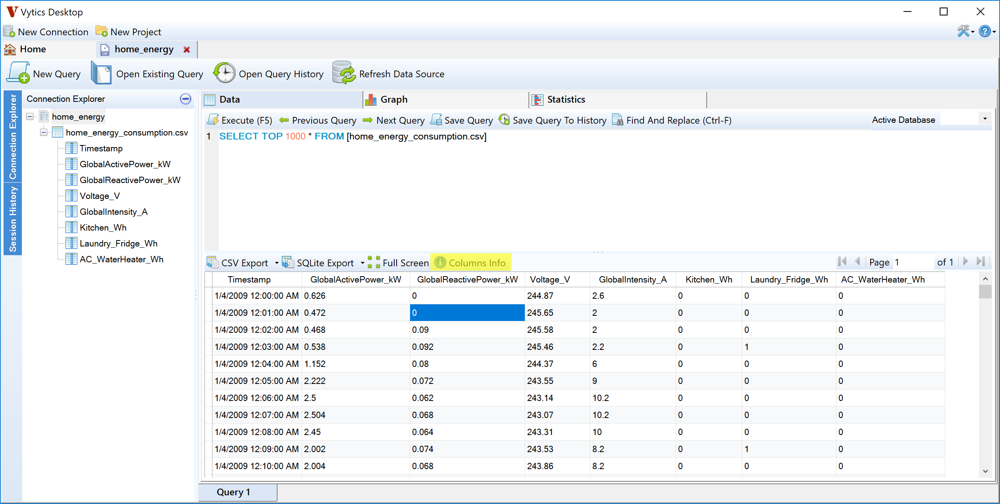
-
Notice the Timestamp column has the data type of String, which is not correct. There are 2 options to solve this issue: 1) change the SQL query to cast the Timestamp column to DateTime data type or 2) add a custom column. In this section, we will use approach (2). 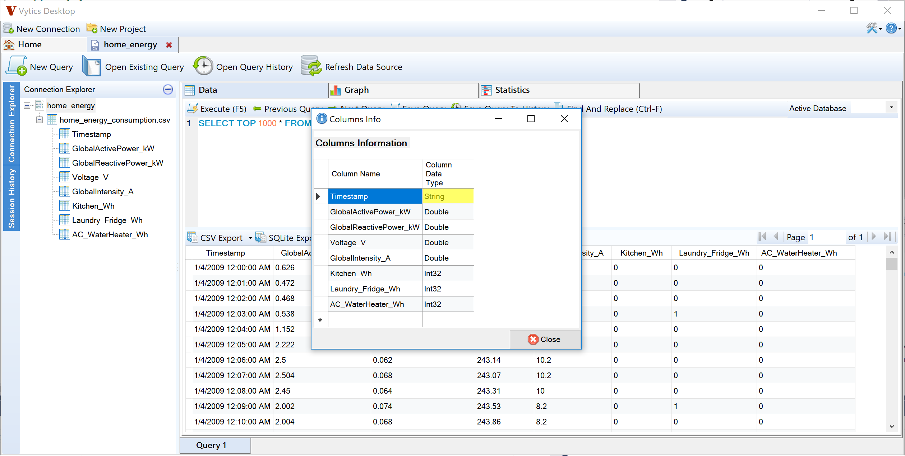
-
Right click anywhere on the data grid header and select Add Custom Field. 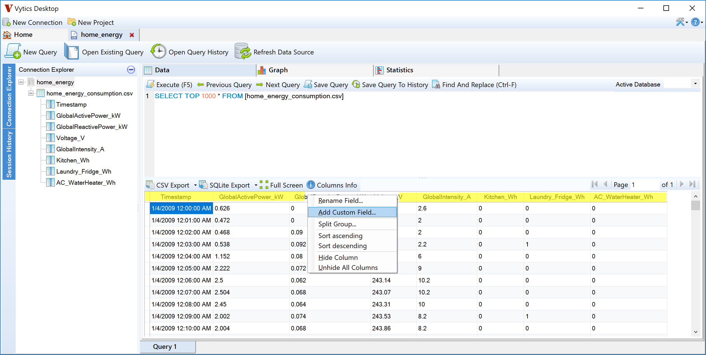
-
The Add Custom Field dialog will display. There is a Quick Help on the right hand side for your convenience. Start typing Timestamp in the left text area. 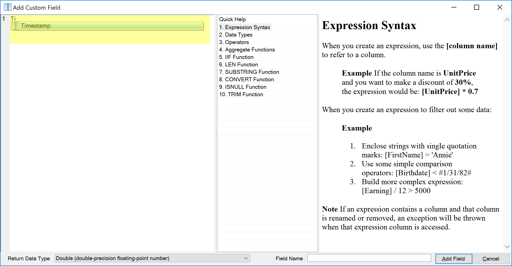
-
At the bottom, select DateTime as return data type and enter Timestamp2 as new field name. Click Add Field to complete. 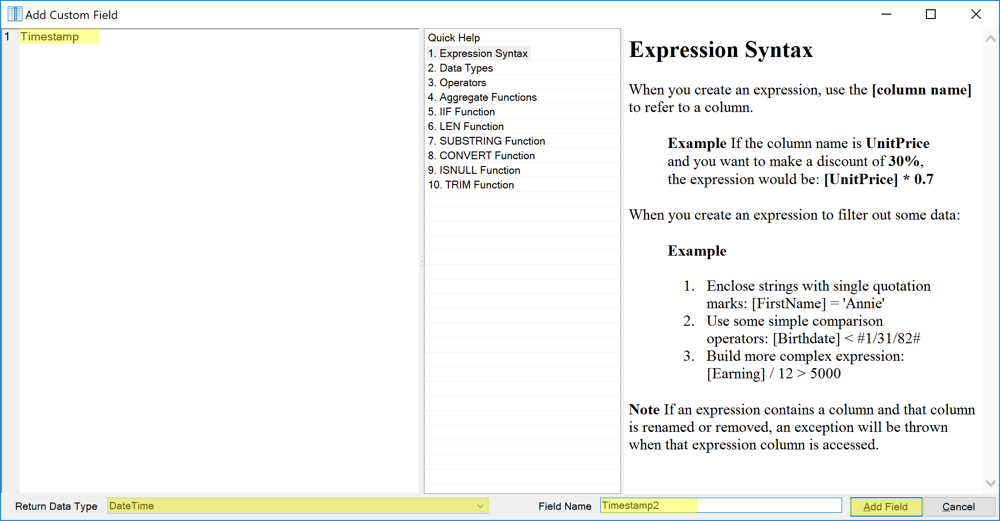
-
You will see new field Timestamp2 added to your result. 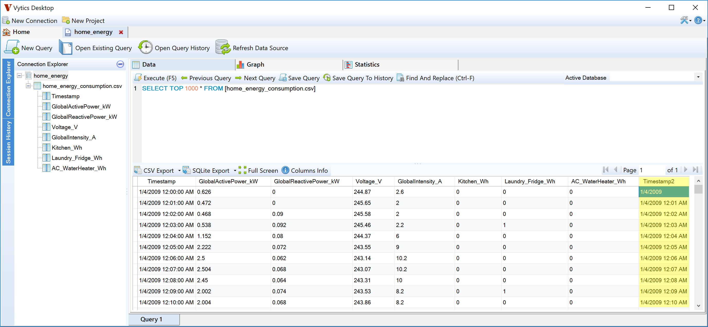
Export data
Vytics allows you to export data in 2 different formats. Each export format has multiple options that you can use (e.g., export all or just visible columns, with or without header, etc.)
-
Click CSV Export to export data to csv file. 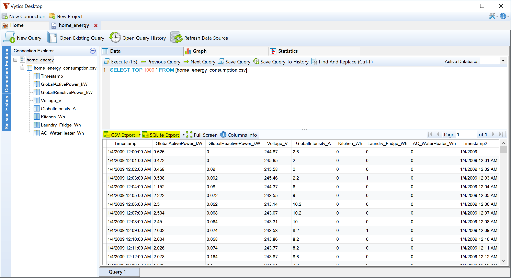
-
Select where you want to save the exported data and enter the file name. Click Save to write data to disk. 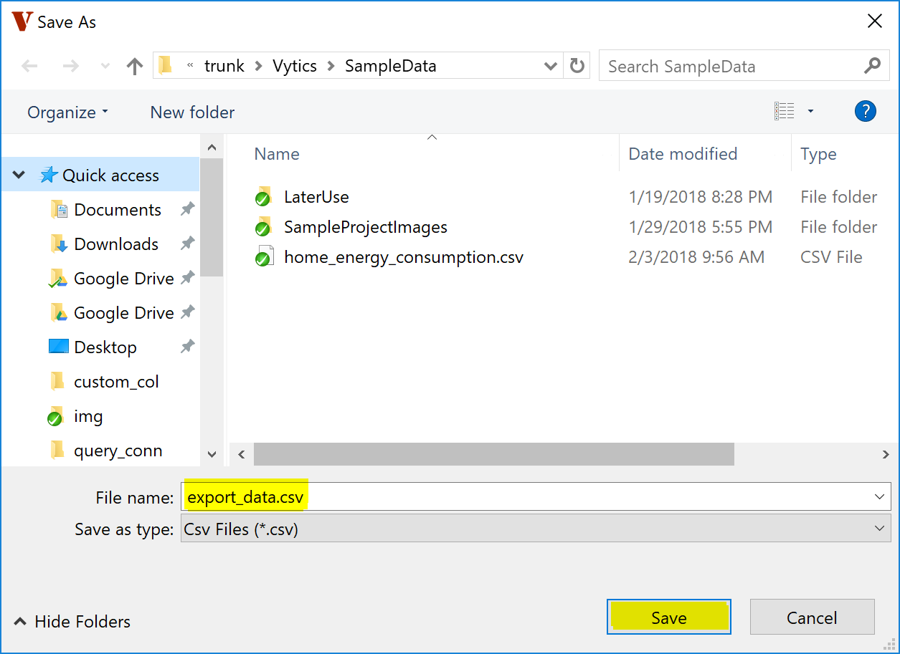
Query history
Vytics saves all executed queries and group them by date. To retrieve past queries, follow steps below:
-
Click Open Query History. 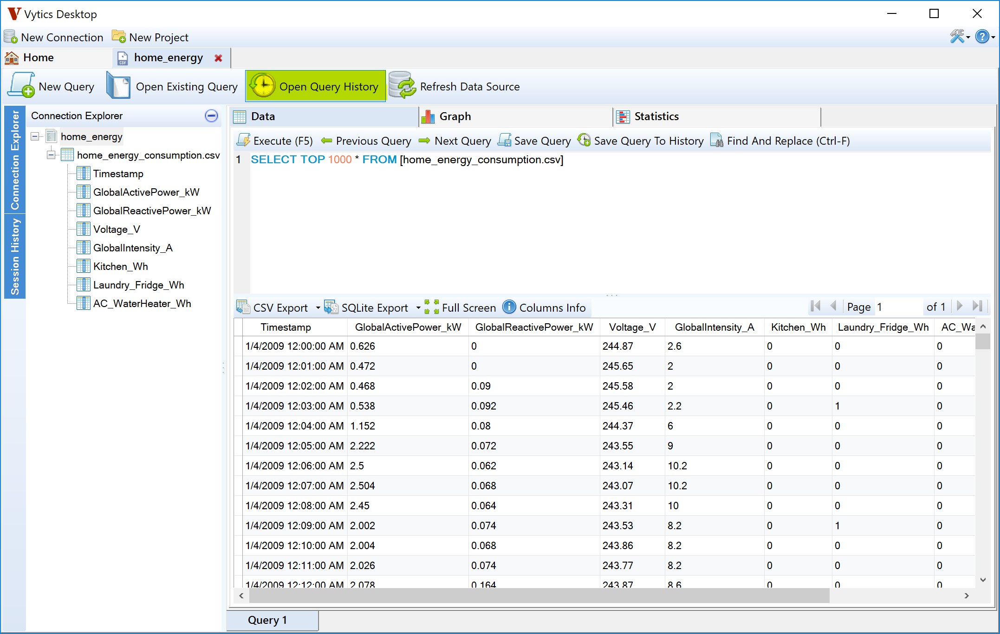
-
Query history dialog will open. A list of dates is displayed on the left and all queries that are executed on the selected date are displayed in the text area on the right hand side. 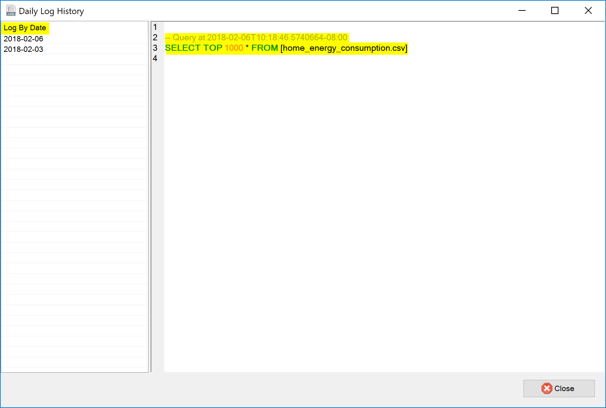